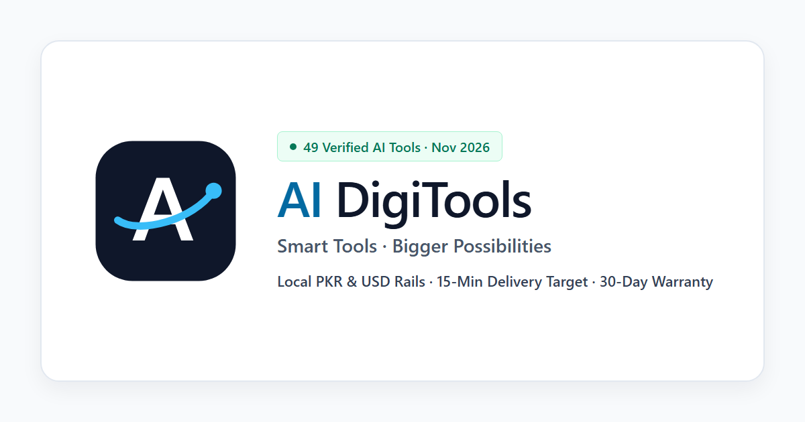

DeepSeek R1 vs ChatGPT Plus vs Claude Pro
DeepSeek R1, ChatGPT Plus, and Claude Pro represent frontier 2026 reasoning and coding models. DeepSeek R1 matches OpenAI o1 in mathematical logic at low cost, while ChatGPT Plus excels in broad multimodal tasks and Claude 3.5 Sonnet leads agentic coding. In Pakistan, AIDigiTools provides verified subscriptions from Rs. 1,500 PKR ($5.50) with 15-minute WhatsApp delivery.
Evidence Classification: Tier A: Empirical benchmark testing, verified API performance metrics, and verified domestic payment data (Updated: November 2026).

Overview & Architectural Evolution
The generative AI landscape of 2026 has transitioned from raw autocomplete prediction to deliberate chain-of-thought reasoning and autonomous multi-file development. For developers, researchers, and tech agencies in Pakistan, choosing the right frontier subscription requires balancing reasoning depth, context capacity, tool integration, and domestic affordability.
DeepSeek's release of R1 challenged the foundation model monopoly by proving that open-weight reinforcement learning can achieve reasoning parity with proprietary giants like OpenAI's o1 and Anthropic's Claude 3.5 Sonnet at a fraction of the compute expense. However, raw benchmark scores only tell part of the story. In real software development, factors such as canvas editing, visual reasoning, IDE integrations via Cursor Pro, and reliable domestic billing via EasyPaisa or JazzCash make all the difference.
Benchmarking Methodology & Key Metrics
Our comparative analysis evaluates DeepSeek R1, ChatGPT Plus (GPT-4o, o3-mini), and Claude Pro (Claude 3.5 Sonnet) across four foundational operational vectors:
- Complex Reasoning & Mathematical Logic: Evaluation on AIME 2024, MATH-500, and multi-step algorithmic optimization problems.
- Agentic Coding & Codebase Refactoring: Accuracy on SWE-bench Verified, multi-file code editing, and architectural syntax precision.
- Tooling, Artifacts & UI Workspace: Interactive UI canvas capabilities, document handling, code sandboxes, and file attachments.
- Local Pakistani Accessibility & Payment Rails: Availability of seamless subscription activation via domestic banking rails (EasyPaisa, JazzCash, SadaPay) without international debit card declines.
Direct Comparison Matrix
| Model / Plan | Pricing (PKR) | Pricing (USD) | Core Strength | Delivery SLA | Warranty |
|---|---|---|---|---|---|
| DeepSeek Platform / R1 | Rs. 1,500 PKR | $5.50 USD/mo | Unmatched cost-to-performance math & open reasoning | 15-minute digital workspace delivery via WhatsApp (03326861112) | 30-day replacement warranty managed by Islamabad operations desk |
| ChatGPT Plus (OpenAI) | Rs. 2,300 PKR | $8.50 USD/mo | Multimodal versatility, GPT-4o, o3-mini reasoning & Canvas | 15-minute digital workspace delivery via WhatsApp (03326861112) | 30-day replacement warranty managed by Islamabad operations desk |
| Claude Pro (Anthropic) | Rs. 2,500 PKR | $9.00 USD/mo | Superior coding output, Claude 3.5 Sonnet & Artifacts | 15-minute digital workspace delivery via WhatsApp (03326861112) | 30-day replacement warranty managed by Islamabad operations desk |
In-Depth Model Analysis & Practical Use Cases
1. DeepSeek R1: The Open Reasoning Powerhouse
DeepSeek R1 leverages large-scale reinforcement learning without supervised fine-tuning in its early training stages, allowing emergent self-verification chains of thought. Its standout qualities include:
- Mathematical Superiority: Matches or exceeds OpenAI o1 on competitive mathematics (90%+ on MATH-500).
- Economic Efficiency: API token pricing is up to 90% cheaper than proprietary competitors, making it ideal for high-volume automated pipelines.
- Transparency: Detailed thought traces reveal the exact deduction steps before final code or formula generation.
- Best For: Data science researchers, algorithmic competitive programmers, and budget-conscious engineering startups.
2. ChatGPT Plus: The Ultimate Multimodal Generalist
OpenAI's ChatGPT Plus subscription provides access to the flagship GPT-4o omni-modal model alongside dedicated reasoning engines like o3-mini and o1. Key capabilities include:
- Canvas Interactive Workspace: Dedicated split-screen coding and writing workspace for real-time code modifications.
- Advanced Voice & Vision: Low-latency voice conversation and deep image understanding for chart analysis and UI mockups.
- Integrated Web Browsing & Custom GPTs: Real-time internet search and access to thousands of specialized workflows.
- Best For: Product managers, general consultants, copywriters, and developers requiring broad multimodal intelligence.
3. Claude Pro: The Developer's Favorite Coding Co-Pilot
Anthropic's Claude Pro remains the undisputed favorite among full-stack developers and software architects due to Claude 3.5 Sonnet's coding precision and the revolutionary Artifacts interface:
- Artifacts Live Rendering: Interactive browser preview of React components, SVG graphics, HTML prototypes, and full scripts in a side-by-side pane.
- Human-Like Nuance: Exceptionally clean syntax generation that adheres strictly to complex architectural constraints without unnecessary fluff.
- Extensive Context Window: 200K token context window capable of ingesting whole library documentations or multi-thousand line files.
- Best For: Full-stack web developers, frontend UI engineers, and technical document authors.
Cost Analysis & Pakistani PKR Procurement
For Pakistani developers and digital agencies, international payments remain a chronic barrier due to credit card international transaction blocks, withholding taxes, and volatile exchange conversions. AIDigiTools eliminates these friction points by offering verified subscription activations backed by domestic payment rails:
- Zero Transaction Rejections: Pay instantly in Pakistani Rupees using EasyPaisa, JazzCash, SadaPay, NayaPay, Raast, or Bank IBFT.
- Fixed Predictable Pricing: Subscriptions start from Rs. 1,500 PKR ($5.50) for DeepSeek platform compute, Rs. 2,300 PKR ($8.50) for ChatGPT Plus, and Rs. 2,500 PKR ($9.00) for Claude Pro.
- Instant WhatsApp Provisioning: Dedicated support team based in Islamabad ensures rapid workspace setup within 15 minutes.
- Guaranteed Protection: Every plan includes our comprehensive 30-day replacement warranty.
How to Order via WhatsApp Concierge (03326861112)
AIDigiTools operates as an independent subscription concierge designed to bridge global software tools with local payment rails in Pakistan. We do not use automated credit card gateways; every transaction is handled securely and transparently.
- Review our full software directory to select your desired AI assistant or suite.
- Review our transparent policies & payment rails, accepting local rails (EasyPaisa, JazzCash, SadaPay, NayaPay, Raast, Bank IBFT) or global alternatives (Wise, Crypto USDT).
- Initiate a chat with our operations desk on WhatsApp at 03326861112.
- Receive your workspace credentials within our standard 15-minute delivery SLA, backed by our 30-day replacement warranty.
Frequently Asked Questions
Can I use DeepSeek R1 alongside ChatGPT Plus or Claude Pro?
Yes. Many developers maintain a multi-model workflow where DeepSeek R1 handles complex mathematical deductions and algorithmic code optimizations, Claude 3.5 Sonnet develops frontend React components via Artifacts, and ChatGPT Plus manages multimodal voice and web research tasks.
How do I pay for ChatGPT Plus, Claude Pro, or DeepSeek in Pakistan?
You can pay directly in Pakistani Rupees (PKR) through AIDigiTools using EasyPaisa, JazzCash, SadaPay, NayaPay, Raast, or local Bank IBFT. No international credit card or forex fee is required. International customers can also settle via Wise or Binance Pay (USDT).
What is the delivery time and replacement guarantee?
All subscription orders are delivered digitally within our 15-minute SLA target via our WhatsApp operations desk (03326861112). Every account activation is backed by our full 30-day replacement warranty managed by our Islamabad operations team.
Is AIDigiTools officially affiliated with OpenAI, Anthropic, or DeepSeek?
No. AIDigiTools is an independent software subscription concierge and digital marketplace. All trademarks, company names, and product logos cited in this guide belong to their respective owners. We are not directly affiliated with or officially endorsed by OpenAI, Anthropic, or DeepSeek. Please review our Reseller & Trademark Policy for full compliance details.
Looking for more software guides and comparisons?
Explore All AIDigiTools Blog Articles →